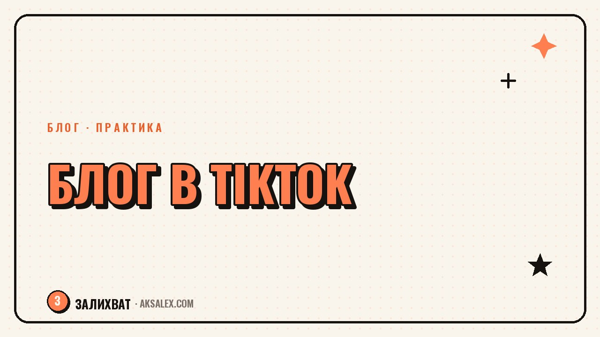

Как вести блог в TikTok: с чего начать новичку

TikTok пугает новичков короткими роликами и ощущением, что там нужно танцевать и шутить, иначе никто не посмотрит. На практике площадка прекрасно работает и для спокойного экспертного контента: обзоров, объяснений, пошаговых советов. Разберём, как завести блог в TikTok с нуля: с чего начать оформление, какие форматы заходят новичкам и как не слить первую неделю на съёмки без результата.
Как оформить профиль перед первым роликом
Прежде чем снимать первое видео, стоит привести профиль в порядок - человек, который перейдёт по ссылке в комментарии, за три секунды решает, стоит ли подписываться. Имя и описание в шапке профиля должны сразу объяснять, о чём канал и зачем на него подписываться.
Что обязательно проверить в шапке
- Имя пользователя - короткое и читаемое, без случайных цифр
- Описание в двух строках: тема блога и что получит подписчик
- Ссылка на другие соцсети или сайт, если они есть
- Аватар, который узнаваем даже в маленьком размере
Отдельно стоит решить, показывать ли лицо. В TikTok хорошо заходят и форматы без лица: экран телефона, руки в процессе, закадровый голос с визуалом по теме. Это снимает стресс у тех, кто не готов сниматься.
Какие форматы роликов заходят новичку
Самая частая ошибка новичка - пытаться сразу снять идеальный ролик с монтажом как у блогера-миллионника. Для старта лучше выбрать 2-3 простых формата и довести их до автоматизма, а сложные приёмы добавлять позже.
| Формат | Что показываешь | Почему работает |
|---|---|---|
| Разбор ошибки | Частая ошибка в теме блога и как её избежать | Цепляет узнаванием ситуации |
| Быстрый совет | Один конкретный приём за 15-30 секунд | Легко смотреть и сохранять |
| До и после | Результат применения совета или продукта | Визуально понятно без слов |
| Ответ на вопрос | Разбор вопроса из комментариев | Показывает экспертность и вовлекает подписчиков |
В TikTok выигрывает не самый красивый ролик, а тот, который досматривают до конца. Лучше понятное видео с чётким началом, чем сложный монтаж, который теряет зрителя на второй секунде.
Как часто публиковать и не выгореть на старте
Частота важнее идеальности. Алгоритму TikTok нужны сигналы, что канал живой, поэтому регулярные простые ролики работают лучше, чем один идеальный раз в месяц. Для старта реалистичнее 3-4 ролика в неделю, чем ежедневная публикация, которая быстро выгорает.
Полезно снимать сериями: за один заход записать сразу 4-5 роликов на разные темы из одной рубрики. Так съёмка перестаёт съедать весь день, а контента хватает на неделю вперёд без спешки.
Как собрать неделю контента за один заход
- Выпиши 5 вопросов или ошибок по теме блога заранее
- Сними все ролики подряд в одной локации и одном свете
- Смонтируй по одному в день перед публикацией
- Оставь один день на ответ в комментариях без съёмки
Как перенести аудиторию из других соцсетей
Если блог уже есть в другой соцсети, не нужно начинать с нуля - можно рассказать своей текущей аудитории о новом канале и адаптировать уже рабочие темы под формат коротких видео. Текстовый пост легко превратить в ролик: главная мысль становится заголовком на экране, а подробности - закадровым текстом.
- Сделай пост-анонс нового канала в TikTok в существующих соцсетях
- Возьми 3-5 лучших по отклику постов и перескажи их в формате короткого видео
- Добавь ссылку на TikTok в описание других профилей
- Не копируй ролики один в один между площадками - подгоняй длину и первую фразу под формат
Типичные ошибки новичков в TikTok
Большинство проблем на старте связаны не с нехваткой идей, а с тем, как ролик подан в первые секунды. Если зритель не понимает за 2-3 секунды, о чём видео, он уходит дальше по ленте, и алгоритм перестаёт показывать ролик дальше.
Чего лучше избегать на старте
- Долгое вступление вместо сути с первой секунды
- Текст на экране, который невозможно прочитать за время показа
- Тихий звук или музыка, забивающая голос
- Публикация без подписи и хэштегов по теме ролика
Исправить это легче, чем кажется: достаточно вынести главный тезис в первую фразу, а подробности раскрывать дальше. Это касается даже спокойного экспертного контента без плясок и трендовой музыки.
Частые вопросы
Как начать вести блог в TikTok с чего начать, если страшно снимать лицо?
Можно начать с форматов без лица: экран телефона, руки в процессе работы, закадровый голос с визуалом по теме. Такие ролики отлично работают, если подача понятная и у видео есть конкретная польза для зрителя.
Как часто нужно публиковать ролики в TikTok новичку?
Для старта реалистичнее 3-4 ролика в неделю, чем ежедневная публикация, которая быстро приводит к выгоранию. Регулярность важнее количества - алгоритму нужны сигналы, что канал живой, а не идеальный ролик раз в месяц.
Можно ли переносить посты из Instagram или VK в TikTok?
Да, но не стоит копировать их один в один - нужно пересобрать под короткий формат и адаптировать первую фразу под внимание зрителя за первые секунды. Главная мысль поста отлично превращается в заголовок на экране ролика.
Почему ролики в TikTok не набирают просмотры на старте?
Чаще всего причина в первых секундах видео: если зритель не понимает суть сразу, он уходит дальше по ленте. Стоит проверить подачу вступления, читаемость текста на экране и громкость звука относительно музыки.
Сколько времени нужно, чтобы вести блог в TikTok и получать деньги?
Это зависит от ниши, регулярности и формата монетизации, и честной цифры здесь не существует. Реалистичнее сначала сосредоточиться на регулярных публикациях и вовлечении аудитории, а вопрос заработка решать после того, как появится стабильная аудитория.
Раз тема оказалась полезной, вот что почитать следующим. Нейросети для страхового агента: расчёты, тексты для клиентов и разбор договоров без лишней рутины.
Читать статью →а не вручную